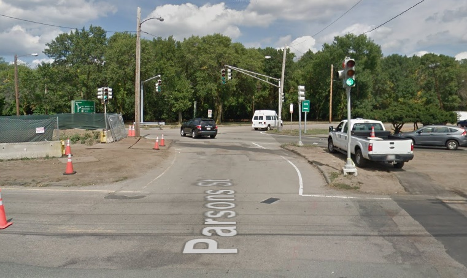

Seek Those That Ride
Growing up I lived in Washington, D.C. in the heyday of WMATA's metro. The public transit system has suffered greatly in recent years but while I was little I would travel all over the district with my elderly neighbor, Anne. She would take me to the Zoo or my favorite Italian delicatessen, which I make sure to visit every time I return home. Very often did Anne and I find ourselves on a red tiled platform under one of Harry Weese's distinctive arches. The center platform stations were my favorite.

As a train pulled into the station and we crossed the threshold from hexagonal tile to worn orange carpet I looked for a colorful vinyl seat. Settling myself down and calling Anne over the doors began to close, a white helmet was shoved through the crack. After it in slid a man who I can only describe as the cross between Kevin Fylnn and Han Solo, his jacket parting with the movement. I remember the helmet quite clearly because it appeared inside the train rather suddenly. It was white with a pair of red and blue stripes round the bottom edge. Once inside he leaned up against a pole on the inside of the carriage, quite proud of himself for making it. He noticed my not-so-subtle child stare and glanced around quickly. I did the same, eager to catch what he was looking for, only to find myself looking back at him, and he at I. He smiled and winked before taking a seat. I sat in content silence, proud of the secret I had with the sauve man Anne had not noticed. Past this point the memory is awkward, modern day life makes it hard to imagine him spending the rest of the trip without a smart phone in his hand.
I recalled this story yesterday on my way to work when I found myself in that unfortunate position in traffic, where you end up right at the front of the next red light. It was only a few moments to my destination, but that didn't stop me from cursing the Acura weirdly stranded in the middle of the median space between divided lanes, causing me extra pause on a machine built to pull away from the type of driver that now impeded me.
My fustration was quickly disspelled when a middle aged gentleman pulled up to the stop line in a jacket much like my own, inspired by the subway rogue I encountered close to twenty years ago. On his head was a helmet I'm sure Kevin Solo would not have minded, but unlike anything in my memory was the late sixties/early seventies BMW R60/5 the man rode. It wore a tired but still gorgeous BMW /R black, framed with the distinctive white pinstripes on the tank. Having recently moved to Boston, a city whose traffic makes it hard to find enough of a moment to take your hand off the clutch to wave to a fellow biker, I savoured the few seconds I had while stopped at the intersection. Bikers lock eyes during that brief moment of all-reds, and this was no different. I started nodding feverently to express my desire to converse with my fellow rider but rather soon after this started I was cleared to proceed towards the idiot Acura, and fearing a beep from my fellow commuters I accelerated into the intersection aggressively. This allowed me to take my hand off the throttle and gave the BMW rider an A-OK sign. He replied with equivilent nods, telling me he knew how god damn cool his bike was and was super pysched I noticed and shared his enthusiasm. As I finished this goodbye I turned my attention back to the most dangerous intersection I've had the displeasure of experiencing in my time here. As I thought about being crushed by the blue Model X who obviously didn't see me I started to wonder about why I'm on this machine; bundled head to toe in things designed to keep my insides inside and roadside debris roadside.
Why is it that automobiles lie to you
Cars enable human beings to move too quickly for their own good. We like to speed through all aspects of life; we eat and procreate almost as fast as we drive, but about the only thing humans do well at speed is die. Automobile makers realized some time ago that ensuring the survival of their customers is a good selling point and thus cars have some safety innovations exclusive to four wheeled vehicles. In my time in EMS I saw people walk away from crashes almost certainly fatal if it weren't for these inventions; crumple zones, three point seatbelts, airbags, hosts of electronic systems, all designed to save lives. We cruise down the highway at 70 miles an hour cushioned by the _illusion_ that this is normal despite the fact stopping suddenly at this speed would make you indistinguible from a sausage. Cars are carefully designed to sacrifice themselves to prevent you from tearing apart during sudden negative acceleration. There's a lot of blind faith in the complex eye to brain to foot to pedal rube goldberg machine of meat.
A bike is more truthful to you. It doesn't give you oppertunity to lie to yourself about the distance to the abrasive road surface or the amount of contact your tires have. It will happily show you what it's like to be thrown off or laid down onto cold earth. Hiding behind B or C pillars is almost too easy, like a child's game. Still the bike is only a vessel, an inanimate object carefully fit around an existing soul. It has no sentience, yet we will call her girl; and smile as she whispers to us the truth of her habitat. Inches to the rough asphalt gripped delicately by no more rubber than there is skin on your palms. We, her rider, operate complex machinery at unreasonable speed. Without the safety net of a sedan we revel in being the weak link in the relationship, sitting quietly next to cave divers and bull riders in the mall while our vices browse underwear and makeup. With such raw beauty dressed up in lace and frills by society how could the child on that DC Metro train not peer over the seats? Those peeks grow into sidelong glances over the edge of your limits, the banshee between your legs suddenly ramping her whispers up to a scream. Insaitable lust driven by the thought of taming the feelings inside you, siren's song never leaving your head cradled in its white, striped helmet.
Is it an expiration date I search for? By default riders are forced to defend the feelings birthed on a motorbike. Family members and significant others will remind you of the words "red mist," and cry when their SUV reveals the contents of its blind spot, thinking of you. The only way I've ever successfully had someone understand is by forcing them to take the clutch and feel the plates of my muse mesh as she pulls them away from my guiding voice. I use words like "friction zone" and "counter steering" knowing full well the names assigned to these concepts of riding will fade immediately once they feel them. Their slow, shaky roll around the parking lot illicits nothing more than a mocking giggle from the machine, humored by what she must think is a waste of her time. Watching them round the streetlights and begin to return I feel betrayed. It's a complete facade when compared to the roar she unleashes with her true partner; not just in my ear but my soul. She is I as much as I her. I wish I knew how she wills the wind into what it is on a motorcycle. With long fingers she reaches out and tugs on the tails of your jacket and gently ruffles the cuff of your pants. She can slide them up your sleeves and wipe away the condensed breath of your indecent panting. Automobile drivers have nothing to tickle, nothing to engorge. These fingers are defeated by roll cages and windshields. Your car will destroy itself shedding energy to save your life while your motorcycle moans in your ear and begs for another gear, while your foot was already on the way there.